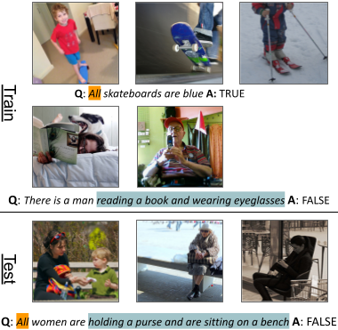

COVR is a test-bed for visually-grounded compositional generalization with real images. You can use COVR to train Visual Question Answering (VQA) models and evaluate it on various compositional generalization tests, and possibly create your own new compositional splits.
For more details refer to our paper.

Paper
COVR: A Test-Bed for Visually Grounded Compositional Generalization with Real Images Ben Bogin, Shivanshu Gupta, Matt Gardner, Jonathan Berant CONFERENCE
@article{Bogin2021COVR,
title={COVR: A Test-Bed for Visually Grounded Compositional Generalization
with Real Images},
author={Bogin, Ben and Gupta, Shivanshu and Gardner, Matt and Berant, Jonathan},
year={2021}
}
Authors


Statistics
| Measurement | Train | Dev. + Test |
|---|---|---|
| # total questions | 248.1k | 13.9k |
| # unique questions | 122.0k | 7.6k |
| # unique answers | 3666 | 1268 |
| # unique images | 79.0k | 9.5k |
| # unique anonymized programs | 635 | 291 |
# True/False (T/F) questions |
133.3k | 7.5k |
# X or Y questions |
50.0k | 2.9k |
# how many ... questions |
33.3k | 1.8k |
| # Open questions | 31.5k | 1.7k |
| avg. # question words (a/p*) | 14.0 | 13.5/11.9 |
| avg. # images per question | 4.4 | 3.4 |
* a: automatically-generated, p: paraphrased
Leaderboard
Few-shot
| Has-Quant | Has-Quant-All | Has-Quant-CompScope | Has-Compar | Has-Compar-More | Has-GroupBy | Has-Logic | Has-Logic-And | Has-Num-3 | Has-Num3-Ans-3 | Ans-Num | Average | |
|---|---|---|---|---|---|---|---|---|---|---|---|---|
| ViLBERT (Bogin et al., EMNLP’21) | 65.6 | 60.9 | 67.5 | 64.2 | 79.8 | 55.6 | 72.1 | 70.9 | 67.7 | 27.5 | 38.5 | 60.9 |
| VisualBERT (Bogin et al., EMNLP’21) | 55.8 | 69.2 | 60.4 | 57.5 | 79.8 | 56.5 | 69.3 | 74.8 | 68.8 | 25.8 | 32.2 | 59.1 |
Zero-shot
| Program Split | Lexical Split | Has-Quant-CompScope & Has-Quant-All | Has-Count & Has-Attr | Has-Count & RM/V/C | Has-SameAttr-Color | TPL-ChooseObject | TPL-VerifyQuantAttr | TPL-VerifyAttr | TPL-VerifyCount + TPL-VerifyCountGroupBy | Average | |
|---|---|---|---|---|---|---|---|---|---|---|---|
| VisualBERT (Bogin et al., EMNLP’21) | 49.5 | 71.5 | 57.7 | 58.7 | 74.1 | 66 | 1.6 | 71.2 | 0 | 41.7 | 49.2 |
| ViLBERT (Bogin et al., EMNLP’21) | 49 | 71.5 | 64.7 | 57.4 | 71.4 | 64.7 | 2 | 61.2 | 0 | 29.5 | 47.1 |
Explore
Explore COVR to view examples from COVR
Download
- For the full documentation of the dataset and its format please refer to our Github repository.
- Click here to download COVR.